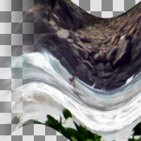

Ripple
Displace pixels in a ripple pattern
Amplitude
name: amplitude
type: double
default: 25.00
minimum: 0.00
maximum: 1000.00
ui-minimum: 0.00
ui-maximum: 1000.00
ui-gamma: 2.00
ui-step-small: 1.00
ui-step-big: 100.00
ui-digits: 1
Period
name: period
type: double
default: 200.00
minimum: 0.00
maximum: 1000.00
ui-minimum: 0.00
ui-maximum: 1000.00
ui-gamma: 1.50
ui-step-small: 1.00
ui-step-big: 100.00
ui-digits: 1
Phase shift
name: phi
type: double
default: 0.00
minimum: -1.00
maximum: 1.00
ui-minimum: -1.00
ui-maximum: 1.00
ui-gamma: 1.00
ui-step-small: 0.00
ui-step-big: 0.10
ui-digits: 3
Angle
name: angle
type: double
default: 0.00
minimum: -180.00
maximum: 180.00
ui-minimum: -180.00
ui-maximum: 180.00
ui-gamma: 1.00
ui-step-small: 1.00
ui-step-big: 15.00
ui-digits: 2
unit:degree
Resampling method
name: sampler-type
type: enum
Wave type
name: wave-type
type: enum
Tileable
Retain tilebility
name: tileable
type: boolean
default: False
pads: input output
parent-class: GeglOperationAreaFilter
categories: distort
source: operations/common-gpl3+/ripple.c
position-dependent: true
license: GPL3+
 This page is part of the online GEGL Documentation, GEGL is a data flow based image processing library/framework, made to fuel GIMPs high-bit depth non-destructive editing future.
This page is part of the online GEGL Documentation, GEGL is a data flow based image processing library/framework, made to fuel GIMPs high-bit depth non-destructive editing future.